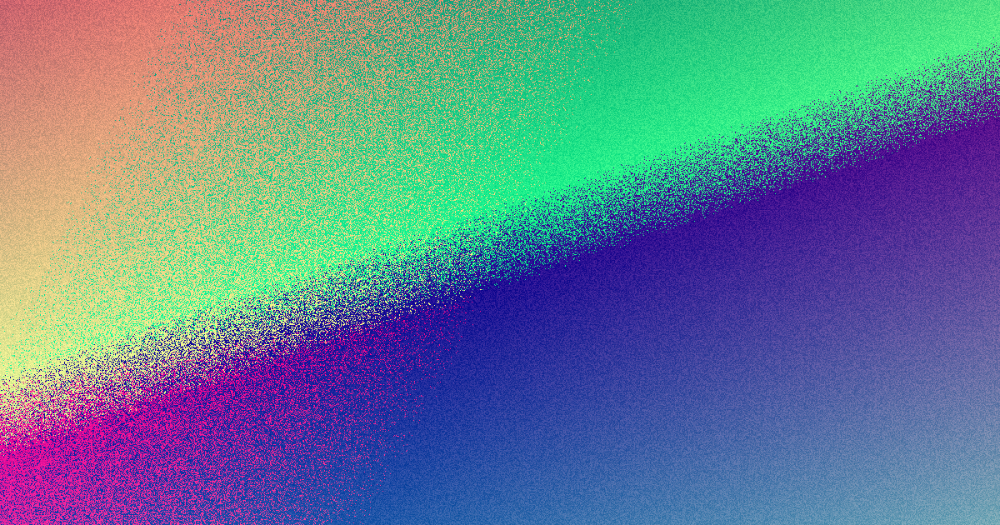

Start by asking for a written scope that names page types, platform, content inputs, launch tasks and handover access. A simple brochure style site usually starts in the low thousands, while custom or ecommerce work costs more. Most small business builds take around 3 to 8 weeks from brief to launch. Hosting and domain renewal are ongoing costs, so they should sit separately from the build price in any quote you compare.
For local buyers, web design adelaide comparison Adelaide businesses should clarify scope and ownership before agreeing to a project timeline.
Web Design Adelaide Comparison Explained
Before you ask for a price, write down the business task, the pages you need, whether content already exists, and who must approve copy and design. Quotes tend to become vague when those inputs are missing, which is why the source page emphasises scope and next steps in writing before work starts. Name the main action the site must produce. List the page types, forms or store functions required. Say whether content is supplied, rewritten or still to be created. web design adelaide teams often find that a clear brief prevents scope creep later on. A shorter Adelaide website quote checklist can help organise that brief. By defining the scope early, you ensure that the final deliverable matches your expectations and that the budget remains accurate throughout the project lifecycle. This approach also helps in identifying potential technical requirements or third-party integrations that might not be immediately obvious but are essential for the site to function as intended. For owners comparing web design options, the real task is to pin down scope, handover rights and launch support before a website quote turns into a project that is harder, slower or costlier than expected. When a redesign is safer than starting over, the brief must account for preserving existing search rankings and user journeys. If the existing site already brings enquiries or has pages that rank, a redesign is often safer than a clean rebuild. The source page explicitly frames redesign work around modernising an ageing or underperforming website without losing search rankings already earned, which means the handover plan matters as much as the visuals. Ask the quote to state what will be carried across, which pages need redirects, whether forms are being replaced, and who checks live pages before launch. If those items are left implied, the risk is not only design drift but missed content, broken enquiry paths or rankings that were never mapped before the old site was retired.
Choosing the Right Platform
Choose the platform by the workload after launch. WordPress is presented as the easy to update option for a team that does not want a developer on call. Ecommerce work points to Shopify or WooCommerce, while campaign jobs may be better served by a narrower landing page rather than a full rebuild. The useful question is not which platform sounds modern. It is who updates text, products or promotions next month, and whether training is included. The FAQ says some builds include a short training session, while ongoing maintenance and marketing are usually separate, so ask where the build ends and support begins. For businesses that plan to manage their own content, a flexible platform like WordPress can save significant ongoing costs. Conversely, for online stores with complex product requirements, a dedicated ecommerce solution like Shopify or WooCommerce might be more appropriate despite a higher initial investment. The key is aligning the technology with the long-term operational goals of the business rather than choosing based solely on aesthetics or current trends. Good on-page SEO, clean structure and strong Core Web Vitals are baked in, not bolted on later. Custom Web Design Bespoke, strategy-led website design built around your Adelaide business and the customers you want to reach. The source page gives enough detail to sort platform choice by who will live with the site after handover. WordPress is presented as the easy to update option for a team that does not want a developer on call. Ecommerce work points to Shopify or WooCommerce, while campaign jobs may be better served by a narrower landing page rather than a full rebuild. The useful question is not which platform sounds modern. It is who updates text, products or promotions next month, and whether training is included. The FAQ says some builds include a short training session, while ongoing maintenance and marketing are usually separate, so ask where the build ends and support begins. Choose the platform around daily editing, not trend words. Ask if training is included or optional. Clarify who handles updates, backups and security after launch.
Pricing and Timeline Expectations
The broad numbers on the source page are useful only after the brief is locked. A simple brochure style site usually starts in the low thousands, while custom, ecommerce or booking enabled work costs more. Most small business builds take around 3 to 8 weeks from brief to launch, with simple one page work faster and larger custom builds slower. What changes those numbers in practice is usually scope and response speed. Content that is late, product data that is incomplete, or approvals that sit with several people can slow a job even when the design direction is settled. Ask the quote to show milestone dates, what the team needs from you at each stage, and which costs sit outside the initial build, including hosting and domain renewal. Hosting and domain renewal are ongoing costs, so they should sit separately from the build price in any quote you compare. Understanding these separate line items helps in budgeting for the total cost of ownership over the life of the website. Prices vary with the size and complexity of the site. A simple brochure-style website for a small business usually starts in the low thousands, while custom, ecommerce or booking-enabled sites cost more. Hosting and domain renewal are ongoing costs on top. We ask the right questions upfront so you get a clear, itemised quote rather than a vague estimate. Most small business websites take around 3 to 8 weeks from brief to launch, depending on the scope and how quickly content is supplied. Simple one-page sites can be faster, while larger custom builds take longer. Agreeing timelines and milestones early keeps the project on track. We focus on web design across metropolitan Adelaide - from the CBD and inner-east suburbs like Norwood and Unley out to the coast at Glenelg, Henley Beach and Semaphore, up through the northern suburbs around Modbury, Golden Grove and Mawson Lakes, and south via Marion and Mitcham.
Ownership and Handover
The clearest clause on the source page is ownership. It says the finished website and its content are yours to keep and move once the build is paid in full. That should be echoed in the written proposal alongside the launch tasks, the handover items and any recurring services that continue after go live. Ask for a line by line list of inclusions and exclusions. The FAQ says a typical package may cover planning, design, build, basic on page SEO setup, mobile optimisation and launch on your domain. It also says stock imagery, content structure and a short training session may be included on some jobs, not all. Treat any of those items as a red flag if they are discussed verbally but not written into the proposal. Ensuring that ownership and access rights are clearly defined protects your business investment and ensures you have full control over your digital presence. This is particularly important if you ever decide to switch providers or move to a different hosting environment in the future. Website Care and Maintenance Ongoing updates, backups, security and support care plans that keep your website healthy after launch. We confirm exactly what is and isn't included before work starts. You own your website Once your build is paid in full, the finished website and its content are yours to keep and move if you ever need to. Built to be found Every site ships on clean, fast, search-ready foundations so Google can index it properly from the day it goes live. Adelaide-focused We focus on web design for Adelaide businesses, from the CBD and inner east out to the coast and the northern and southern suburbs.
- List your requirements. Write down the business task, page types, content inputs and who approves copy.
- Ask for a written scope. Ensure the proposal lists page types, platform, content inputs, launch tasks and handover access.
- Confirm ownership. Verify that the finished website and content are yours once the build is paid in full.
- Check the timeline. Ask for milestone dates and confirm what costs sit outside the initial build, including hosting.
| Platform | Best For | Maintenance |
|---|---|---|
| WordPress | Blogs, small business sites | Self-managed or low cost |
| Ecommerce | Online stores | Platform managed or specialist |
| Landing Page | Campaigns, enquiries | Short term focus |
Common questions
How much does a website cost in Adelaide? A simple brochure style site usually starts in the low thousands, while custom or ecommerce work costs more. Hosting and domain renewal are ongoing costs.
Who owns the website after it is built? The finished website and its content are yours to keep and move once the build is paid in full.
How long does a web design project take? Most small business builds take around 3 to 8 weeks from brief to launch, depending on the scope and how quickly content is supplied.
This guide is for Adelaide businesses comparing web design quotes and clarifying project scope, ownership and timelines.